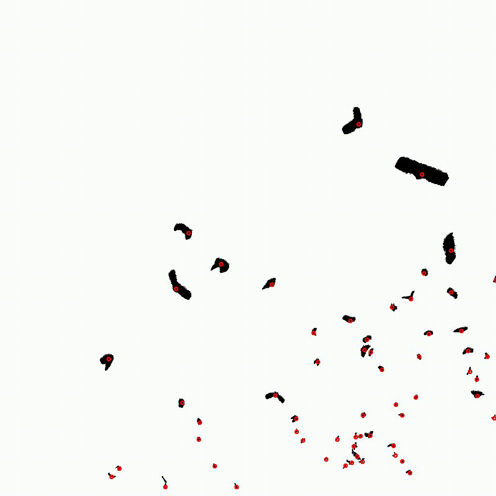
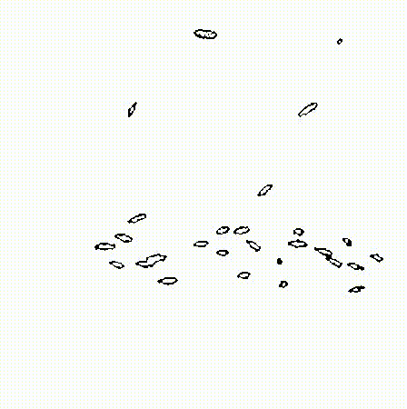

Problem Definition
Tracking 3-dimensional objects in a two dimensional frame is a difficult task. For example, moving from frame to frame, the algorithm must not only detect objects of interest in each frame, but also associate current positions with past positions. The difficulty is compounded by many facets of 3d projection onto a two dimensional plane, such as occlusion and emergence of objects between frames. Here, we present an implementation that can largely track the movements of objects in two different datasets -- one with bats flying in and out of view, and the second with fish swimming in a tank.
Method and Implementation
The method I implemented for object tracking is largely agnostic between bat and fish datasets. The algorithm implements both kalman filters to estimate centers and the Hungarian algorithm to handle frame-by-frame assignment.
Object Detection
The algorithm begins by detecting centers in the first frame of the video. In the bat dataset this is provided to us. In the case of the fish dataset, fish are outlined in red. To find the center for each fish I first binarize the image by setting any pixel with red values > 100 and green levels < 75. I then performed dilation followed by erosion on the binary image to open up contours. Contours were detected using the opencv library. Centers were calculated for each contour using image moments. Because there were quite a bit of overlapping centers, due to erroneous contour detecting, only centers with a euclidean distance greater than 10, between already logged centers, were returned. It is important to note fish detection was not perfect, and in order to get a stronger contour, using my naive color filtering approach resulted in a fair number of false positive fishes.
Object Tracking
Once the first centers were isolated, trajectories, kalman filters, and
velocities for each center were initialized. Trajectories were constructed as
a vector of vectors containing points to observed centers. Kalman filters were
initialized with 1e-4 process and measurement noise, and a 4 x 4 transition
matrix that considered x and y positions along with x and y velocities. To
better estimate the cost of assigning a past center to a current center,
calculated velocities were used during distance matrix construction.
After the tracking variables had been initialized, the algorithm moved on to
the second frame of the dataset. Centers were again extracted in a dataset
dependent manner, and a distance matrix was calculted by finding the euclidean
distance between past points summed with their past velocity and new centers.
However, because no assignment has taken place between time frames yet,
velocities for the first frame are zero.
Once a distance matrix is constructed, the matrix is scanned for any past
centers with a minimum distance greater than 70. These centers are very far
from any current observed center, and it is likely they left the video in the
previous frame, and their associated trajectories are terminated.
Centers at the current frame are also scanned. If current centers display a
minimum distance greater than 70, it is assumed these centers represent new
objects to the video, and they have new trajectories and kalman filters
initialized.
After center filtering occurs, a new distance matrix is constructed that only
contains centers that passed the initial pruning step. This new cost matrix
is fed into the hungarian algorithm, from a third party library, to find the
past centers that best match with current centers. If the number of rows in
the matrix is greater than the number of columns, that means we have more
past centers than current centers. It is assumed this represents an occlusion
event, where two objects overlap. Therefore, a measurement for the unassigned
past center is estimated using its Kalman filter. In the case when the number
of columns is greater than the number of rows, we have more current centers
than past centers. It was decided this likely represents an emergence event.
Whereby a previously occluded object emerges from behind another object. In
this case, we treat the center as a new object, and initialize a new
trajectory. Creating a whole new trajectory might be cause for concern because
it is possible we will be starting a trajectory for a previously tracked
object (e.g. two separate objects occluded and then separated). However,
because we use kalman filters during occlusion events to estimate centers,
we don't actually lose trajectories during occlusion. Thus, we can be
reasonably confident we are not starting a new trajectory for a previously
tracked object.
Once centers have been assigned, either through Hungarian matching with
observed centers or estimated Kalman centers, trajectories are updated,
current velocities are calculated, and Kalman filters are looped. This process
repeats the for every frame left in the video.
The algorithm to analyze the bat dataset is called by the function analyze_bats(). Similarly, to analyze the fish dataset, the analyze_fish() function is called. Neither require parameters as file location is assumed. Helper methods are well documented in the file tracking.hpp. However, their definitions are left out of this report for the sake of brevity.
Experiments
No real experiments were conducted. Trajectories were plotted next to observed centers and binary images to visualize tracking success. No quantitavie measures were taken, and results are largely qualitative and based on the eye test.
Results
List your experimental results. Provide examples of input images and output images. If relevant, you may provide images showing any intermediate steps. If your work involves videos, do not submit the videos but only links to them.
Results | ||
| Source Image | Trajectories | |
| Bats |  | |
| Fish |  |
 |
Discussion
While some erroneous trajectories do take place during tracking, I believe by
and large the tracking algorithm implemented here is largely successful in
tracking the images both bat and fish movement. Specifically, the tracking of
fish trajectories is particularly successful.
The bat dataset provided many difficulties for tracking: individuals would leave
the frame, other indivuals would spontaneously enter, and the smaller bats far
in the distance provided dense clumps of difficult to track bats. The most
successful cases, in terms of dealing with occluded or appearing objects, were
close bats with longer trajectories. The algorithm's ability to correctly deal
with occluded objects is directly related to how long the trajectory has been
tracked before occlusion. Longer trajectories are well tracked, but shorter
trajectories are sometimes lost. The length of occlusion also affects how well
trajectory tracking occurs. Objects that are occluded longer can display poor
tracking where projected centers remain at the point of occlusion rather than
following the occluded trajectory. As a plus, the pruning stage before center
assignment seems to have an exceptionally high positive predictive value for
new bats entering the scene and old bats leaving the scene. It should be noted
that some spurious trajectories are randomly tracked in the bats. The exact
cause of this is still a mystery, thoguh it could be due to a combination of
necessitating as many assignment as possible during the hungarian algorithm.
When the algorithm to track bats was applied to fish, the results were largely exceptional. Occluded objects were tracked well, and predicted centers seem to track individuals even when they are not outlined in red. The largest contributor to poor performance during the fish dataset appears to be object detection. Many false positive arise during tracking, which is largely due to a generous green-level threshold to produce more robust contours. It is relatively common for false-postive centers to interfere with true centers and their trajectories; however, trackin is still largely successful.
Conclusions
For the first pass at a tracking algorithm, I believe I was largely successful. However, improvements can definitely be made. There is an implicit assumption in the algorithm that occlusion and separation events cannot occur at the same time. This is due to the fact that occlusion and appearance events are determined by comparing the number of rows and columns in the filtered distance matrix. A vast improvement in trackign could likely occurr if iterations or modifications occurred during center assignment. For example, modifying the hungarian algorithm to throw out centers if it greatly reduces the cost of center assignment as a whole, would help identify centers that have occluded or appeared in a single frame. Further, improvements could be made in kalman filter intialization. For example, smaller bats in the lower right hand corner of videos, likely display a greater noise-to-signal ratio in their center measurements than larger bats. Initializing filters depending on the number of centers nearby, might help capture this increased noise.
Credits and Bibliography
Implementation for the hungarian algorithm was taken from a third party library hosted here.
This was an individual assignment with no additional group members